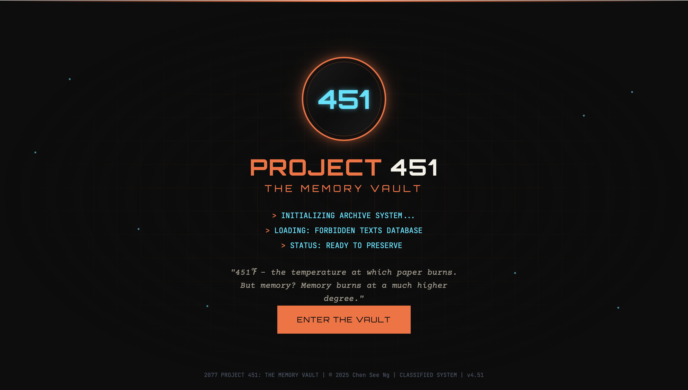
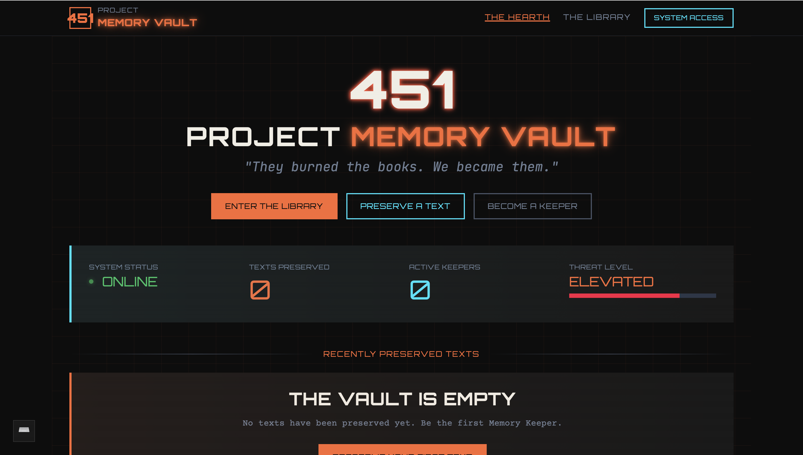
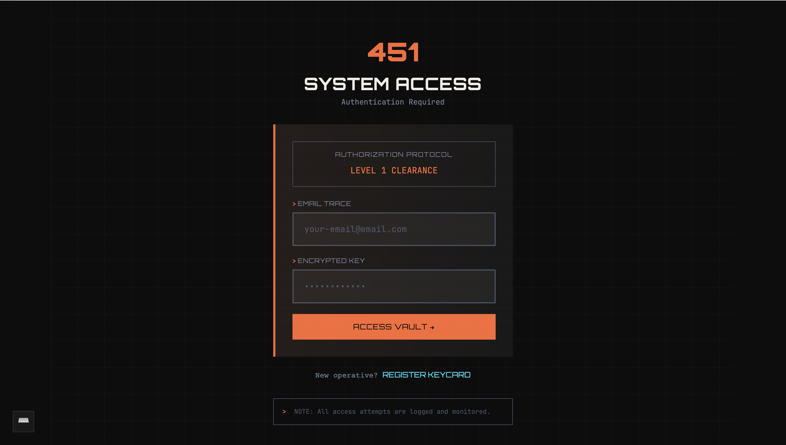
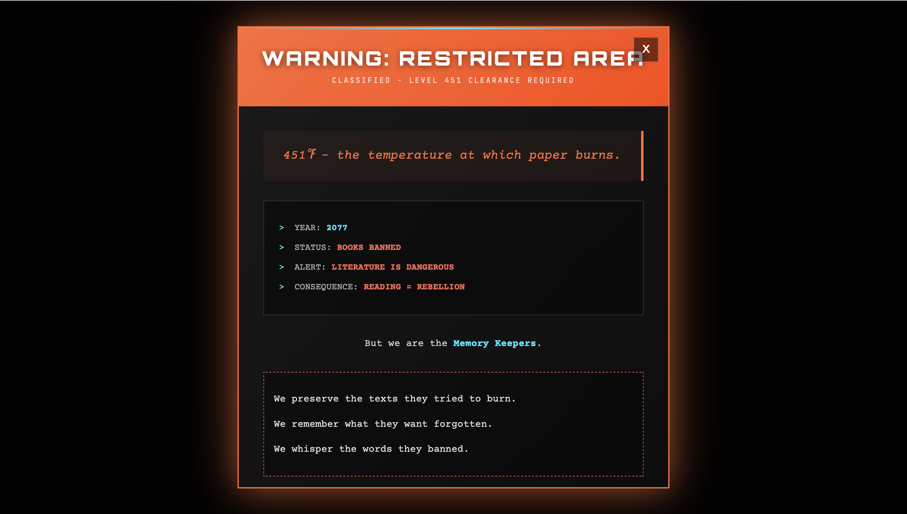

Project 451 is a web experience inspired by Fahrenheit 451, a classic novel by Ray Bradbury about a future where books are banned and destroyed. This project translates the novel's themes of censorship and memory preservation into an interactive digital archive.
The core concept asks a simple question: what if the book preservers in the story built a secret digital archive? Users enter a classified computer interface to navigate through hidden records and forbidden texts. The goal was to make visitors feel like they are accessing a highly restricted system.




My main goal was to ensure every UI element fit into the fictional world. I did not want to just build a standard website about Fahrenheit 451. I wanted to design a website that looks like it exists inside that dystopian universe.
I chose a dark color palette and monospace typography to build the atmosphere. These visual choices represent an underground system built by people hiding from the authorities. The opening "WARNING: RESTRICTED AREA" modal immediately sets the tone. It asks the user to make an active choice before they can even view the archive.
I also borrowed status indicators from real computer systems, such as SYSTEM ONLINE or ARCHIVE STATUS: SECURE. These familiar institutional elements make the fictional experience feel much more realistic and engaging.
I kept CSS animations simple and intentional. Elements like a blinking cursor and a sequential loading text create a stronger atmosphere than complex scrolling effects.
To build this multi-page website efficiently, I chose Astro as my framework. Its component-based architecture allowed me to create reusable UI elements, such as the navigation menu and the footer, across all five pages. This approach kept my codebase clean and easy to maintain.
I utilized CSS Flexbox and CSS Grid extensively to manage the complex layouts, especially for the statistics section and the image galleries. This ensured that the layout remained stable and responsive across all device sizes without relying on heavy CSS frameworks.
For interactivity, I wrote custom vanilla JavaScript to handle the mobile navigation toggle, smooth scrolling, and dynamic content sliders. Writing these scripts from scratch improved my logical problem-solving skills significantly.
The most demanding part of the project was designing and building the Playlist page. Displaying a long list of tracks, album covers, and interactive elements can easily become visually messy. I had to structure the layout very carefully to ensure a clean user experience.
Ensuring the track details aligned perfectly on both large desktop monitors and small smartphone screens required complex CSS Grid management. I spent a lot of time adjusting the spacing, typography, and hover effects on the playlist to make it feel like a premium music application.